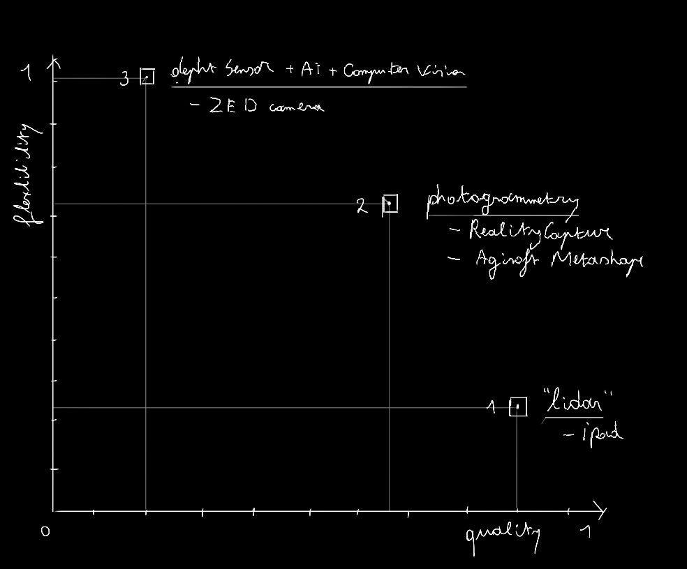
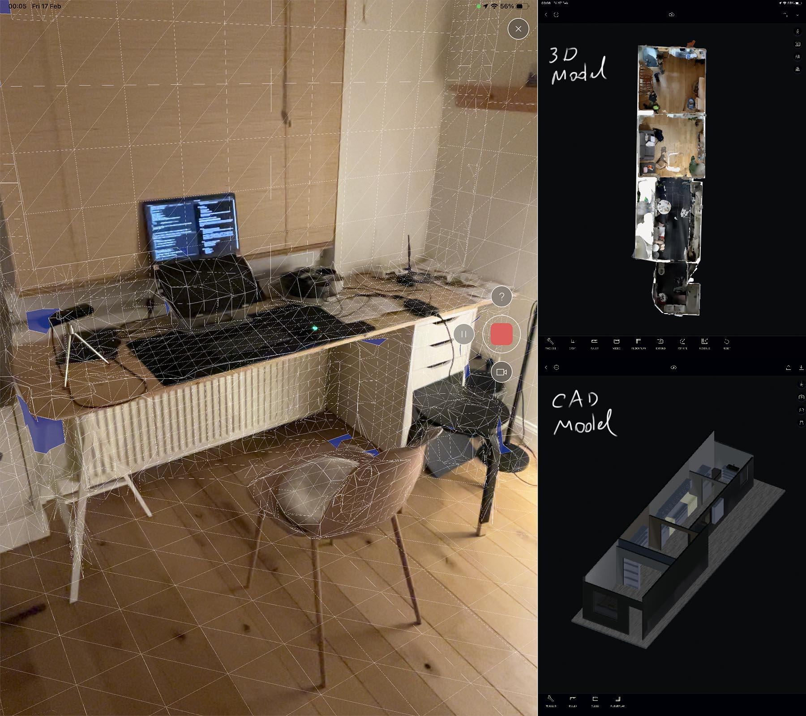
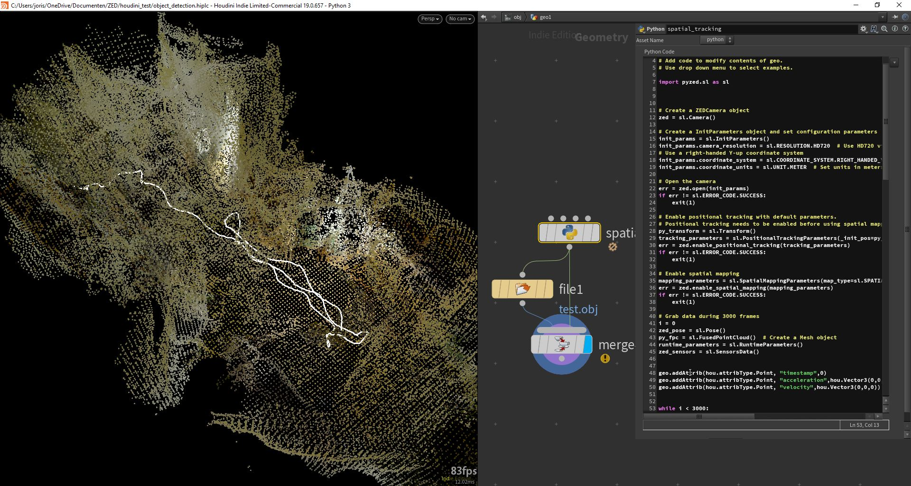
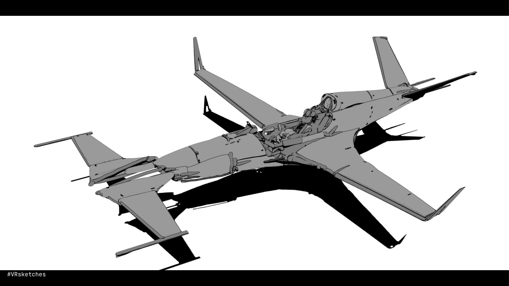
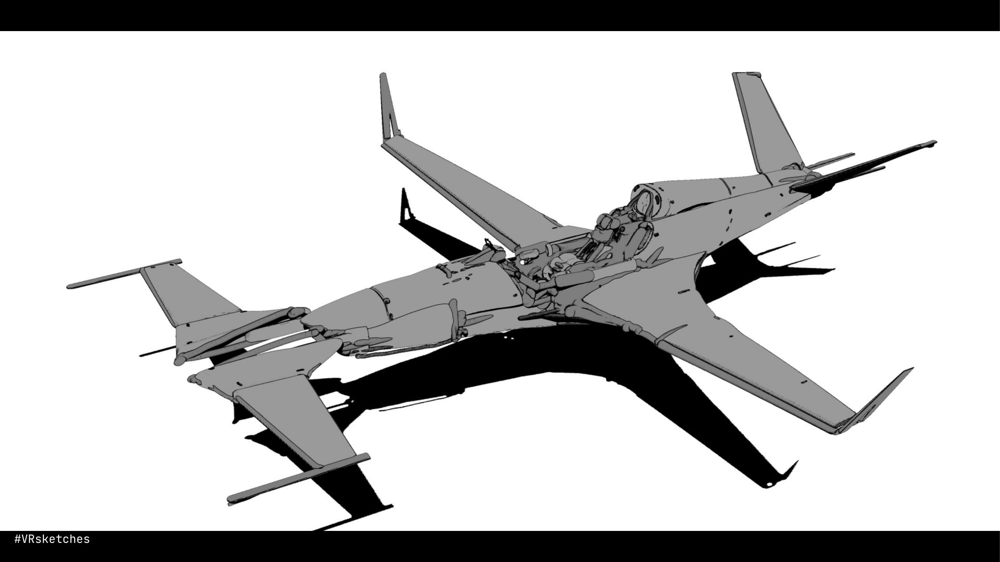

workshops
This elective offers a range of workshops that focus on hybrid crafting. Students will learn about cutting-edge tools for mapping and sensing the environment, as well as virtual reality (VR), augmented reality (AR), and extended reality (XR) applications that can be used in an iterative feeback loop between digital and physical design projects.
mapping the environment
between flexibility and quality

fig 1.flexibility-quality graph . 2023.
flexibility is understood as the ability to hack/manipulate/tweak/extract and is more aligned with the opensource and 'free' principles.
Quality can be described as the raw polygonal output and the accuracy of the mesh and texture. Most of the time this is inversely proportional to time but there are exeptions.
Each of the following tools can be mapped on this axis. This can help as a guide how to pick the right tool for the job.
1. lidar/time of flight e.g. Ipad + polycam

fig 2.polycam printscreen . 2023.
the good:
-
- AR tracking capabilities are superior
- computation happens on the cloud, which makes it extremely mobile and versatile.
- very intuitive, accurate and foolproof.
- very fast
- light condition does not matter
-
- extremely closed source, no hacking and scripting capabilities.
- most apps have a subscription or export based payment system.
- price of the Ipad Pro
-
- you can measure and process scans on different scales
- there is a new mode which you can use to map rooms to CAD models
lidar/time of flight (Ipad/polycam) tutorial
polycam and all other IOS "lidar" applications are all extremely intuitive and do not require a tutorial. Later, a description will be added how to export and import .gtlf and .obj files for rendering and display on the web.
2. photogrammetry e.g. Agisoft Metashape/RealityCapture
fig 7.realitycapture processing a tree scan . 2023.
the good:
-
- very high 3d model & texture quality control
- most applications have cli/scripting support
-
- local computation = limited by local specs
- sensitive to lighting conditions
- can be very time intensive
- quality is camera dependant
-
- no harsh close-ups
- diffuse light
- lots of tracking points
- avoid reflection
- no movable objects in frame
- have around 70% coverage related to the previous frame
- every medium that outputs an image can be hacked to generate photogrammetry results. This includes e.g.
drone footage [e.g. ], dslr images/video [e.g. ] , infrared camera (termal camera) [e.g. ] , scrape the web (youtube livestreams/videos [e.g. ] || instagram images || google images [e.g. ]) , synthetic data (renders [e.g. ] || AI [e.g. ] || ML [e.g. ] ) , a photogrammetry studio [e.g. ] , every medium that outputs an image can be used...
photogrammetry tutorial
If you are on MacOS or ffmpeg didnt install correctly, skip the ffmpeg method.
method 1: extract frames using the terminal with ffmpeg
installation
$ pip install ffmpeg (Windows if Python already installed)
Download the zip https://www.gyan.dev/ffmpeg/builds/ffmpeg-release-essentials.zip
xtract the zip and move the file ffmpeg.exe (located in the bin folder) to your directory of the video.
./ffmpeg.exe -i "input.mp4" -vf fps=3/1 "out-%05d.jpg"
$ sudo apt install ffmpeg (unix)
$ $ brew install ffmpeg (MacOS)
extract frames with this command
$ cd "the/right/directory/"
$ ffmpeg -i "input.mp4" -vf fps=3/1 "out-%05d.jpg"
Notice: here our video has the name "input.mp4" adjust accordingly.
method 2: use blender to extract the frames
-
Method 1: Agisoft metashape workflow (MacOS & Win & Linux).
Method 2: Realitycapture workflow (Win).
OPTIONAL. if you want to install realityCapture (ONLY WINDOWS), download these files -> here. install, copy files to directory, double click registration.reg
Method 3: polycam in photogrammetry mode(Android & IOS).
polycam is a modile application (with a web interface) for IOS and Android that can produce photoscans in the cloud. A good thing if you dont have acces to computational power, or if you are on location.
If you have a IOS device with Lidar capability, it also supports that.
-
Automate the worksflow with bash, ffmpeg, realitycapture CLI, Houdini, python and imagemagick (windows only)
First, make sure the following packages are installed.
-python
-ffmpeg
-RealityCapture
-houdini non commercial
-imagemagick
Make sure you download the project files in this directory
3. Stereo depht camera e.g. ZED camera
fig 4.with a bit of tinkering, a ZEDmini can be placed on a drone . 2023.
the good:
-
- very versatile, can extract all the data you'll ever need.
- good outside and in large spaces
- extremely hackable
- very good SDK + documentation
- good intergration with unity/unreal game-engines
- has support for tensorflow, openCV2, numpy, openGL etc. This means it can be used for machine vision purposes, facial tracking, pose estimation, depht estimation etc
-
- local computation = limited by local specs
- learning curve
- very bad in low light conditions
- quality of the model can sometimes disapoint
-
- make sure all python and cuda dependencies are correctly installed
- check out the example files here for more info.
Stereo depht camera (ZED camera tutorial)
Here you can find all the documentation regarding the initial setup.
An additional Tutorial covering the basics is not needed as it is very intuitive. However, there are different presets. Those include "neural", "ultra", "performance", "quality" and they respectively have prerecorded settings regarding distance treshold, resolution and quality.
fig 3.ZEDfu printscreen . 2023.
The standalone ZED program lacks a lot of the functionality the SDK offers which we can solve by building it ourselves using the documentation.
Highly recommended are these github repositories and the SDK example files regarding SDK integration, customizability, plugins and much more.
fig 6.3D object detection in openCV with Houdini and openGL . 2023.
fig 5.ZEDfu positional tracking . 2023.
fig 4.ZED houdini plugin . 2023.
Above is an example of a custom ZED Houdini plugin. More documentation on this setup soon.
VR workflows
VR creation, worldbuilding and workflows
full pdf can be downloaded here


 



gravity sketch workflow
- navigation
- ar (optiopnal)
- import models and reference images
(login on your laptop via "gravity sketch landingpad", as well as your headset with username "creatievemakers@gmail.com" and password "creatieveMakers123")
- apply shaders
- tools
- tool parameters
- edit mode
- snapping
- low poly
- straight lines
- projection planes
- exporting
exercise:
-> Capture a model using one of the previously covered techniques covered. Downloaded model(s) can also be used.
-> load in the model and do a modification/adjustment.
-> export said model, load this into blender, and make a render comparing the 2.
To cast your screen (what your are seeing in VR) to a PC, TV or phone, login at https://www.oculus.com/casting/ and follow the guidelines.